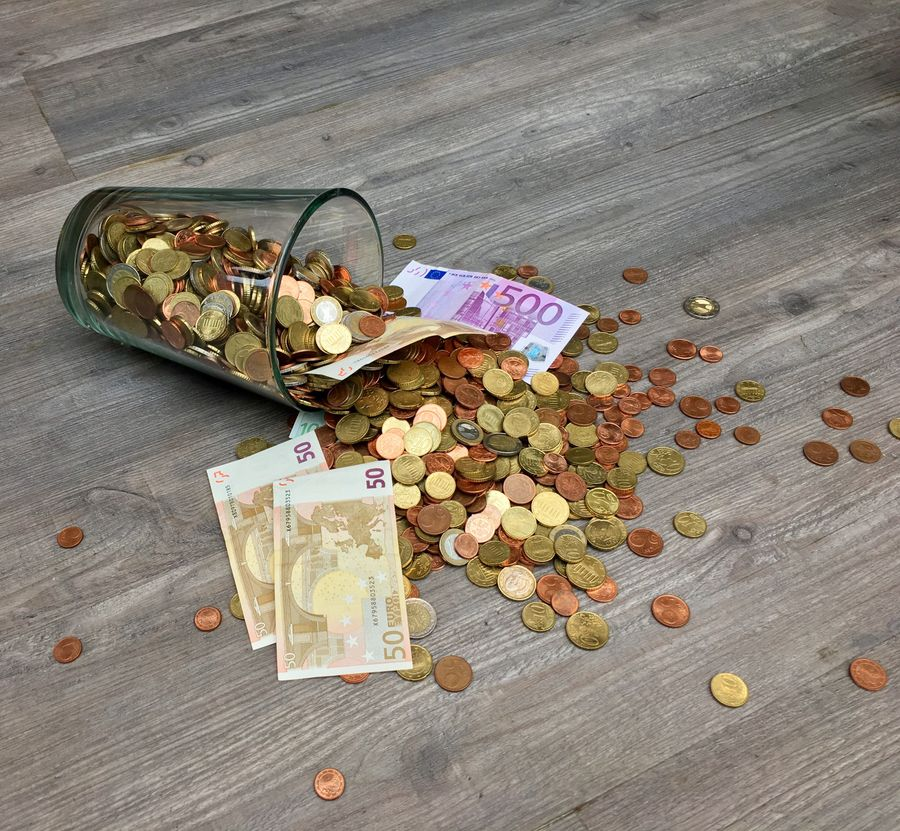

你不知道的德国 · 30
💵 2026 年了
德国人还在用现金
Bargeld · 60% 交易用现金 · 隐私与债务恐惧
💵 一个逆潮流而行的数字
在瑞典，现金几乎绝迹；在中国，扫码支付是默认选项。但在德国——大约 60% 的日常交易仍然用现金完成。
德国央行（Bundesbank）的调查显示，德国人钱包里平均装着 107 欧元现金，而且大多数人表示不想改变这个习惯。
💵 德国人对现金的执念体现在细节上：很多超市收银台明确写着 "Nur Barzahlung"（只收现金）；连一些出租车都只收现金。外国人常被这个"发达国家"的反差惊到。
🇩🇪 Auf Deutsch
In Deutschland werden etwa 60 % aller Alltagstransaktionen in bar abgewickelt. Die Deutschen tragen durchschnittlich 107 Euro Bargeld bei sich – und wollen das auch nicht ändern.
🔒 隐私：最重要的理由
德国人对数据的敏感程度欧洲闻名。每次刷卡、每次扫码，都会留下一条消费记录——买了什么、什么时候、在哪里。
在德国的公共讨论里，"Gläserner Bürger"（透明的公民）是一个高频词——指的是个人生活被完全记录、被完全看见的状态。现金是抵御这种状态的最后一道屏障。
🔒 2019 年德国曾讨论过"现金上限 5000 欧元"的提案，引发巨大争议。反对者的核心论点不是"不方便"，而是 "国家不应该知道我把钱花在哪里"。
🇩🇪 Auf Deutsch
Der Schutz der Privatsphäre ist das wichtigste Argument. Jede Kartenzahlung hinterlässt eine Datenspur. Bargeld gilt als Schutz vor dem "gläsernen Bürger".
📜 历史的阴影
德国人对"被监控"的警惕，有历史根源。
20 世纪的两段极权时期——纳粹德国和东德——都留下了深刻的教训。东德国家安全部（Stasi）曾系统性地监控公民的日常行为，包括消费记录。这段历史让"数据被收集"这件事在德国带着特殊的重量。
📜 东德时期，Stasi 雇佣了约 19 万线人，档案堆积超过 110 公里。两德统一后，这些档案向公民开放查阅——很多德国人第一次读到自己被监视的记录。
🇩🇪 Auf Deutsch
Die Erfahrung mit NS-Zeit und DDR prägt das Verhältnis zu staatlicher Überwachung. Die Stasi sammelte systematisch Daten über Bürger – auch über ihren Konsum.
💳 对债务的恐惧
德语里有个词：Schulden（债务）——在德国文化里，它带有强烈的负面色彩。
用现金支付意味着你花的是你已经有的钱；用信用卡则意味着"先花后还"。对很多德国人来说，这种区别不只是财务习惯，而是一种道德立场。
💳 德国的信用卡持卡率远低于英美。更受欢迎的是 EC-Karte（借记卡）或 Girocard——钱直接从账户扣，不允许透支。储蓄率方面，德国长期高于大多数发达国家。
🇩🇪 Auf Deutsch
Deutsche haben eine kulturelle Abneigung gegen Schulden. Bargeld bedeutet: Man gibt nur aus, was man hat. Kreditkarten sind deshalb weniger verbreitet als in angelsächsischen Ländern.

05
🏪 小商家也爱现金
在德国，很多小商铺、面包店、咖啡馆只收现金。原因很实际：刷卡机要手续费，还要报税记录。
而对一些小本生意来说，现金交易更灵活。这形成了一种循环：商家只收现金 → 顾客必须带现金 → 现金文化维持下去。
🏪 德国有个专门的词形容这种店："Bargeldladen"（现金店）。在柏林、莱比锡等城市的某些街区，一条街上可能有一半店铺不收卡。
🇩🇪 Auf Deutsch
Viele kleine Läden akzeptieren nur Bargeld – wegen Gebühren und Buchführungspflicht. So entsteht ein Kreislauf: Läden wollen Bargeld, Kunden müssen welches dabeihaben.
📱 但在变：变化正在发生
疫情是一个转折点。2020 年后，德国人开始习惯非接触支付（kontaktloses Bezahlen），超市和餐厅的刷卡比例明显上升。
年轻一代的态度也在变化。35 岁以下人群使用移动支付的比例显著高于年长群体。但即便如此，德国在"无现金化"这件事上，仍然慢于几乎所有邻国。
📱 有意思的是，德国人自己也在调侃这件事。社交媒体上流行一句话："In Deutschland ist Bargeld auch ein Stück Freiheit"——在德国，现金也是一种自由。
🇩🇪 Auf Deutsch
Seit der Pandemie steigt die Nutzung von kontaktlosem Bezahlen. Jüngere Menschen zahlen häufiger mobil. Doch Deutschland bleibt bei der Bargeldabschaffung langsamer als fast alle Nachbarländer.
📖 想读更多德国冷知识？
30 期「你不知道的德国」深度专栏，都在 Leon 德语学习中心。
📚 进入网站